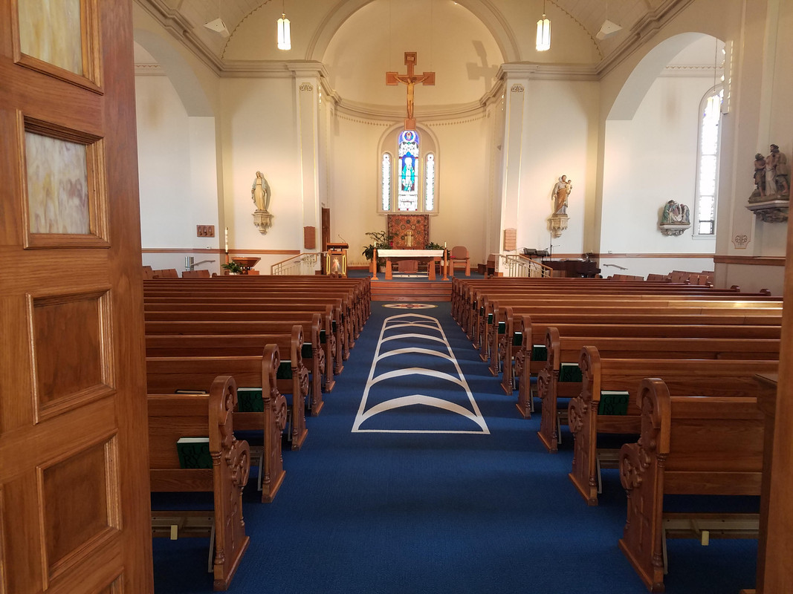
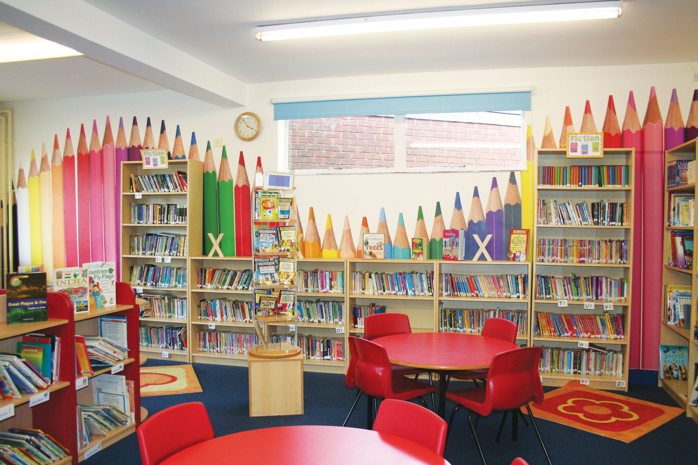
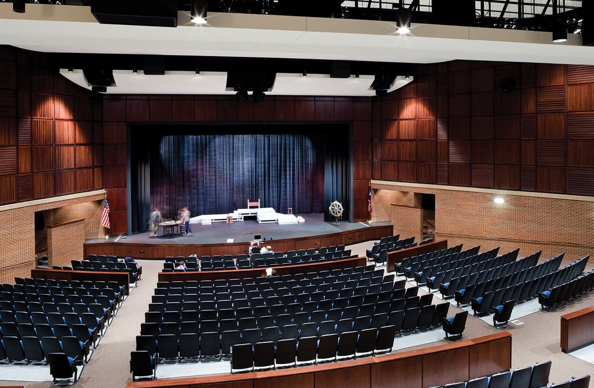

Looking Around


The School Library
Established June 1980

"It’s my privilege to be at the helm of a glorious institution which has cradled men of great repute. It also gives me great pleasure to be part of this school which has achieved excellence by providing the nation with such talented men. At the very out set I would like to remember with great appreciation and gratitude my predecessors and committed teachers who have made a remarkable contribution to the growth of the alma mater."

With new food options and responsibilities to consider, canteens must be better organised and more efficient than they have been in the past. Online menus with photographs of the meals prepared, and detailed descriptions of their ingredients help both students and parents make the right nutritional choices. At Xavier's, each student or staff member who accesses the canteen is provided with a school canteen account on the school website that keeps track of their previous meal choices and any dietary requirements they may have. Ordering online by ticking a box and paying for meals online eliminates all the fuss of money handling, making it safer and less complicated for staff and students alike. Here again, diversity is the key.
St. Xavier's OAMS informs parents about their child's/children's activities in the school, instantly. Once a student reaches the school, the parents will be informed about the status via text messages. This helps schools keep a record of the student's absenteeism. Students can mark the attendance by logging in, and this is stored in a database, which can later be checked by the Admin. The tracker has so much potential that it can identify which students are irregular to their classes and not ready to establish connectivity with the actual concepts of their curriculum's subjects. As soon as you enter a student's enrollment number or name, details like availability in classes, number of lectures attended will be displayed and no proxies are possible since the tracker is supported by cloud capabilities. Even the security offered can be so robust and powerful that those students who always fool their deans are caught in a shorter span just after the admin enters the selected student's login details into this tracker. All this will improve accuracy and transparency in any of the educational institutions as students and their parents are pre-informed about the real-time status of leave requests and absenteeism in a confidential manner and at reduced costs.